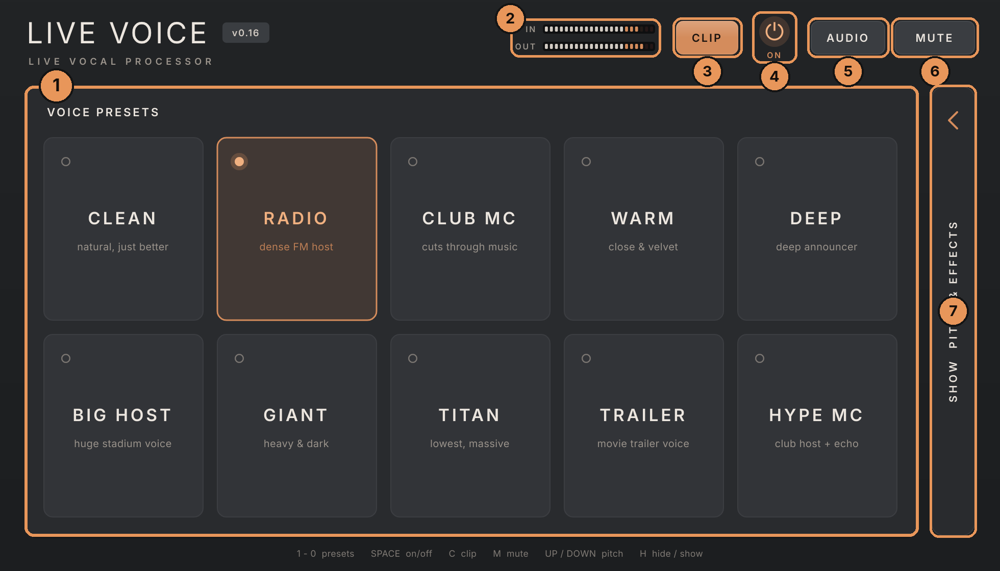
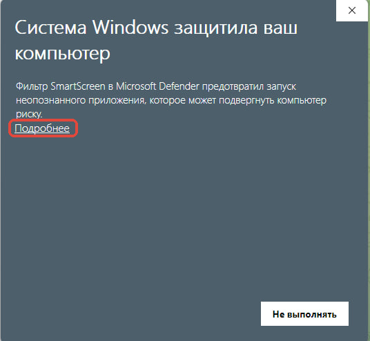
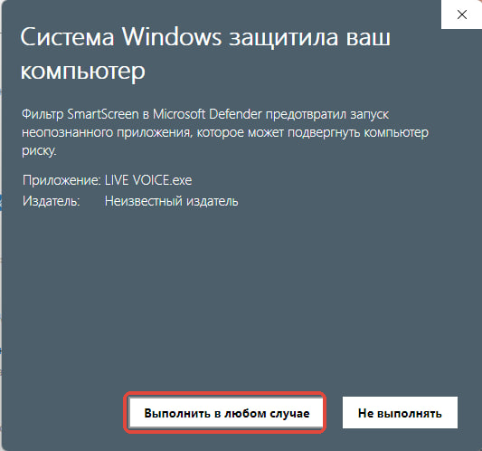
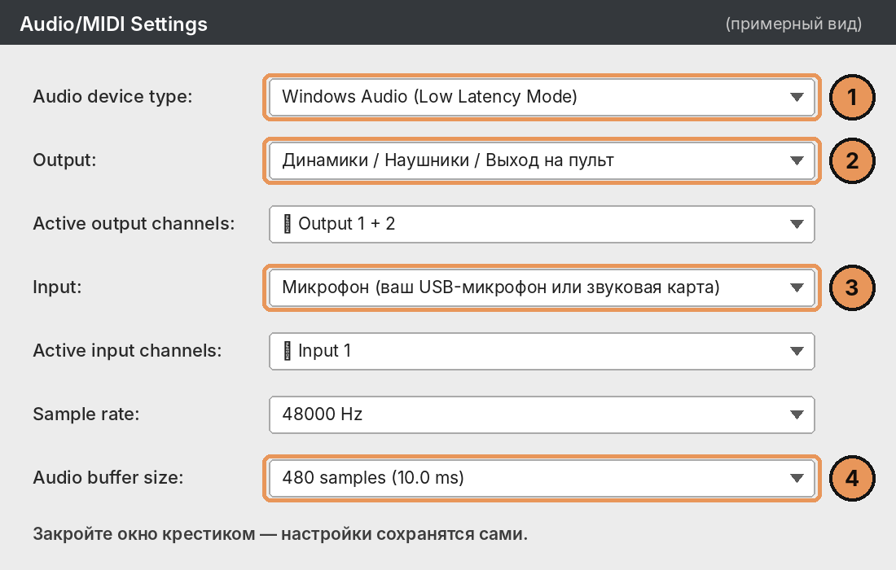
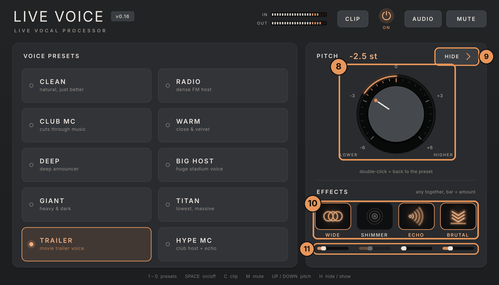

Программа делает голос в микрофоне дорогим и «радийным» прямо во время мероприятия. Нажали кнопку с подходящим голосом — и всё. Разбираться в звуке не нужно.
LIVE VOICE стоит между микрофоном и колонками. Ваш голос проходит через программу, и в колонки уходит уже улучшенный голос: ровный по громкости, чистый, без шума в паузах, разборчивый на фоне музыки. По желанию голос можно сделать ниже и мощнее или добавить эффект — эхо, «ширину».
Настраивать ничего не нужно: внутри уже есть 10 готовых голосов (их называют пресетами). Выбираете подходящий — и говорите.


При самом первом запуске программа сама откроет окно Audio/MIDI Settings. В нём нужно выбрать, откуда брать голос и куда его отправлять.

| № | Строка | Что выбрать |
|---|---|---|
| 1 | Audio device type | Windows Audio (Low Latency Mode). Если такого пункта нет или звук не идёт — просто Windows Audio. Если у вас профессиональная звуковая карта — можно выбрать ASIO. |
| 2 | Output | Куда пойдёт голос: наушники, колонки или выход звуковой карты на пульт. |
| 3 | Input | Ваш микрофон (USB-микрофон или вход звуковой карты). Скажите что-нибудь — полоска рядом должна шевелиться. |
| 4 | Audio buffer size | Не трогайте. Только если звук трещит — выберите число побольше (например 256 → 512). |
Закройте окно крестиком. Программа всё запомнит — в следующий раз просто запускайте её. Открыть это окно снова можно кнопкой AUDIO (см. раздел 6).
| № | Что это | Зачем |
|---|---|---|
| 1 | Голоса (пресеты) | 10 готовых звучаний. Нажали — голос сразу звучит так. Горит оранжевым — выбран сейчас. Клавиши 1…9, 0 выбирают их по порядку. |
| 2 | IN / OUT | Полоски громкости: IN — что слышит микрофон, OUT — что уходит в колонки. Должны «прыгать», когда говорите. Если загораются красным — слишком громко. |
| 3 | CLIP | Делает голос плотнее и «пробивнее», как на радио. Громче от этого не становится. Голоса сами его включают, где нужно. Клавиша C. |
| 4 | ON (кнопка питания) | Включает и выключает обработку. Выключено — в колонки идёт обычный микрофон, без улучшений. Удобно сравнить «до» и «после». Клавиша Пробел. |
| 5 | AUDIO | Открывает окно выбора микрофона и колонок (раздел 4). |
| 6 | MUTE | Мгновенно глушит звук (кнопка становится красной). Нажмите ещё раз — звук вернётся. Клавиша M. |
| 7 | Вкладка «SHOW PITCH & EFFECTS» | Открывает дополнительные настройки (раздел 7). Обычно не нужна. Клавиша H. |
Первые четыре — ваш обычный голос, только лучше. Остальные шесть — голос чуть ниже и солиднее, по нарастающей.
| Голос | Как звучит | Когда подходит |
|---|---|---|
| CLEAN | Ваш голос, только чище и аккуратнее. Самый естественный. | Свадьбы, банкеты, конференции, тихие залы |
| RADIO | Плотный голос радиоведущего. | Почти везде, хороший выбор «по умолчанию» |
| CLUB MC | Максимально разборчивый, прорезает громкую музыку. | Клуб, громкая музыка, танцпол |
| HYPE MC | Как CLUB MC + лёгкое эхо на концах фраз. | Объявления в клубе, «раскачать» зал |
| WARM | Мягкий, бархатный, чуть ниже. | Медленные моменты, романтика |
| DEEP | Глубокий голос диктора. | Официальные объявления |
| BIG HOST | Большой «стадионный» голос, шире и ниже. | Выход артистов, торжественные моменты |
| TRAILER | Голос из трейлера фильма: ниже, с весом и лёгким эхом. | Интро, «барабанная дробь», анонсы |
| GIANT | Тяжёлый, тёмный, заметно ниже. | Шоу-моменты, конкурсы |
| TITAN | Самый низкий и массивный. | Короткие эффектные фразы |
Если хочется поиграть со звуком, нажмите на вкладку справа «SHOW PITCH & EFFECTS» (или клавишу H). Откроется ещё одна панель:

| № | Что это | Как пользоваться |
|---|---|---|
| 8 | Ручка PITCH | Делает голос ниже (влево) или выше (вправо). Её можно крутить прямо во время речи — для эффекта. Двойной щелчок по ручке — вернуть как было в голосе. Клавиши ↑ ↓ — по шагу. |
| 9 | HIDE | Спрятать эту панель обратно. |
| 10 | Эффекты | Нажали — включили (кнопка светится), ещё раз — выключили. Можно включать несколько сразу. WIDE — голос «шире» и приятнее (есть почти во всех голосах понемногу). SHIMMER — «сияние» над голосом. Красиво для коротких моментов, речь при нём менее разборчива. ECHO — эхо: последнее слово «улетает» в зал. Пока вы говорите, эхо тише. BRUTAL — добавляет голосу «вес» и лёгкую хрипотцу. |
| 11 | Полоски под эффектами | Сила эффекта: тянете вправо — сильнее, влево — слабее. |
Если ручку PITCH сдвинули, а панель спрятали — на вкладке справа будет видна надпись «PITCH» с числом. Так понижение никогда не «прячется».
Писк (свист, «завязка») появляется, когда микрофон слышит колонку: колонка играет микрофон, микрофон снова слышит колонку — и звук идёт по кругу. Это не поломка программы, а законы звука. Правила:
Windows умеет сама выводить микрофон в колонки — тогда вы слышите себя дважды: обычный голос и обработанный (с небольшим «эхом»). Отключите это:
Также убедитесь, что микрофон не идёт в пульт напрямую параллельно с программой.
| Что случилось | Что сделать |
|---|---|
| Нет звука, полоска IN не шевелится | Выбран не тот микрофон. Нажмите AUDIO → в строке Input выберите свой микрофон. Проверьте, что микрофон включён и подключён. В Windows: Параметры → Конфиденциальность → Микрофон → разрешить доступ приложениям. |
| IN шевелится, а OUT нет | Нажат MUTE (горит красным) — нажмите его ещё раз. |
| OUT шевелится, но не слышно | Выбран не тот выход. AUDIO → строка Output → выберите наушники / колонки / звуковую карту. Проверьте громкость на пульте и в Windows. |
| Свистит | См. раздел 8: MUTE, тише, микрофон от колонок. |
| Голос звучит дважды или с «эхом» | Отключите «Прослушивать с данного устройства» (раздел 8). Проверьте, что эффект ECHO выключен, если эхо не нужно. |
| Звук трещит, щёлкает | AUDIO → Audio buffer size → выберите число побольше. Закройте лишние программы. Ноутбук — от сети. |
| Голос тихий | Программа сама подтягивает тихий микрофон за несколько секунд речи. Если всё равно тихо — добавьте громкость на пульте или громкость микрофона в Windows. |
| Слишком громко, OUT красный | Уменьшите громкость на пульте. Программа не даст перегрузить звук, но лучше без красного. |
| Голос странно низкий | Нажмите на голос CLEAN или RADIO — понижение сбросится. |
| Первые секунды слышен фон / шум | Нормально: программе нужно 1–2 секунды, чтобы «услышать» шум зала. Дальше в паузах будет тихо. |
| Программа не открывается | Возможно, она уже открыта (работать может только одна). Посмотрите на панели задач внизу. |
| Всё сломалось, хочу как в первый раз | Закройте программу. Нажмите Win+R, введите %APPDATA%, Enter. Откройте папку LIVE VOICE и удалите файл LIVE VOICE.settings. Запустите программу — она откроется как в первый раз. |
| Хочу… | Что нажать |
|---|---|
| Выбрать голос | Плитку с голосом · клавиши 1…9, 0 |
| Не знаю, какой | RADIO (в громком клубе — CLUB MC) |
| Срочно выключить звук | MUTE · M |
| Сравнить «до / после» | ON (кнопка питания) · Пробел |
| Голос плотнее | CLIP · C |
| Голос ниже / выше | Вкладка справа → ручка PITCH · ↑ ↓ |
| Эхо, ширина и т.п. | Вкладка справа → кнопки эффектов |
| Спрятать / показать настройки | HIDE / вкладка справа · H |
| Сменить микрофон / колонки | AUDIO |
| Всё вернуть как было | Нажать на любой голос |
LIVE VOICE 0.16 · Thematic